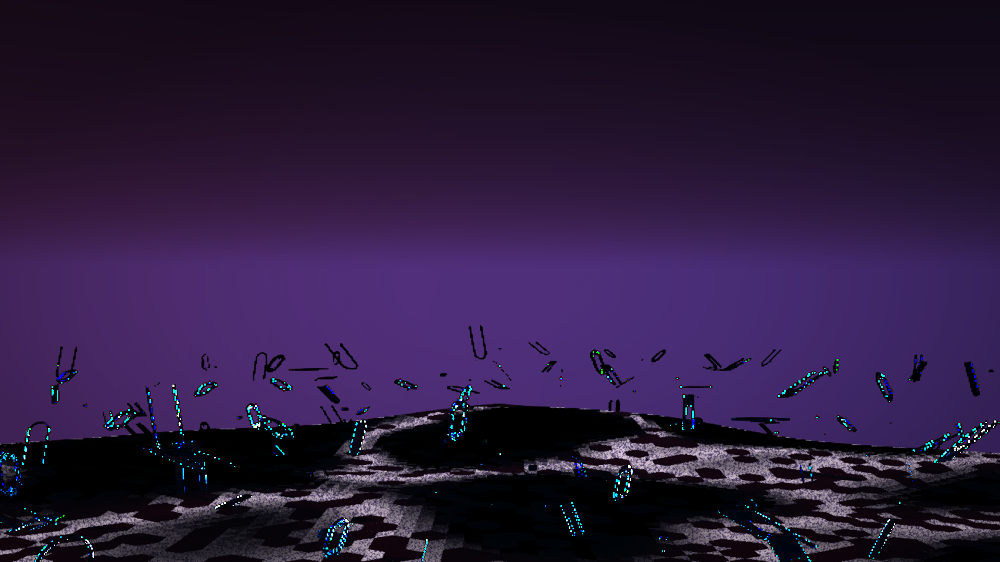
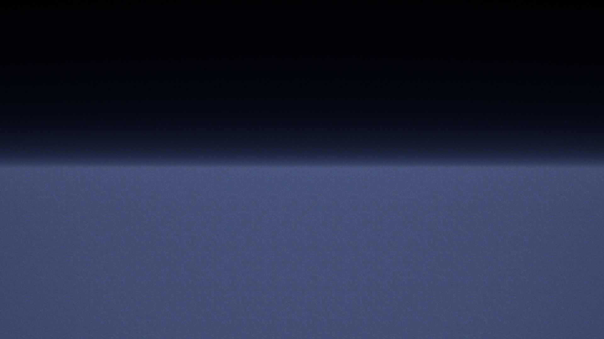
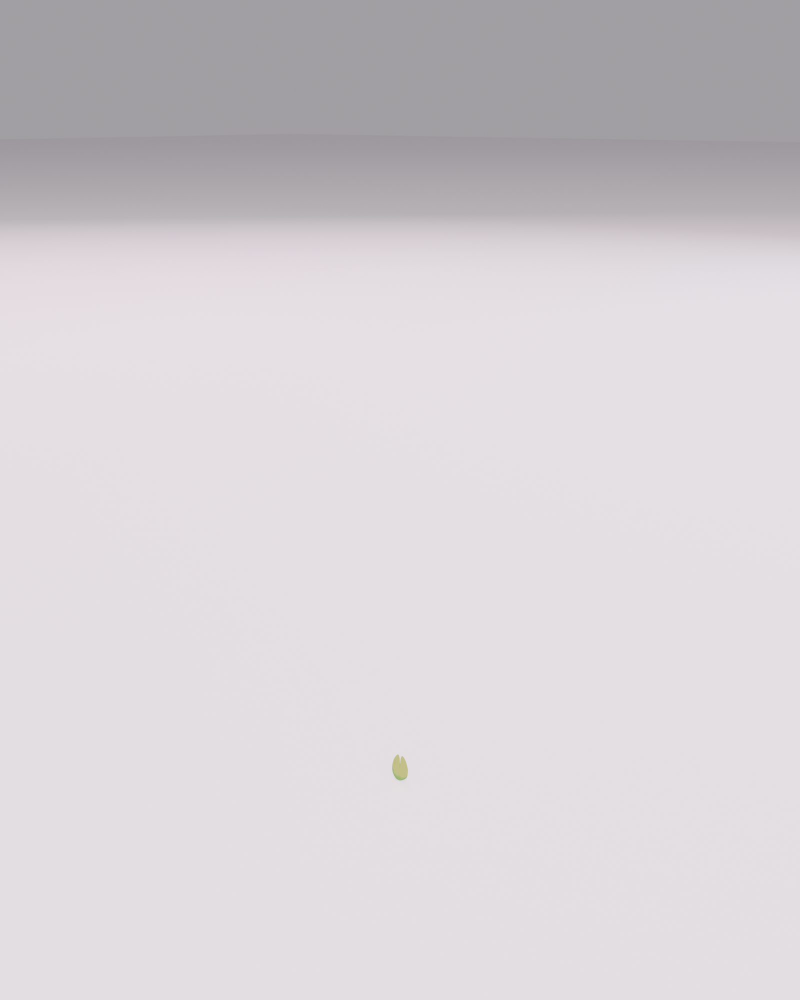
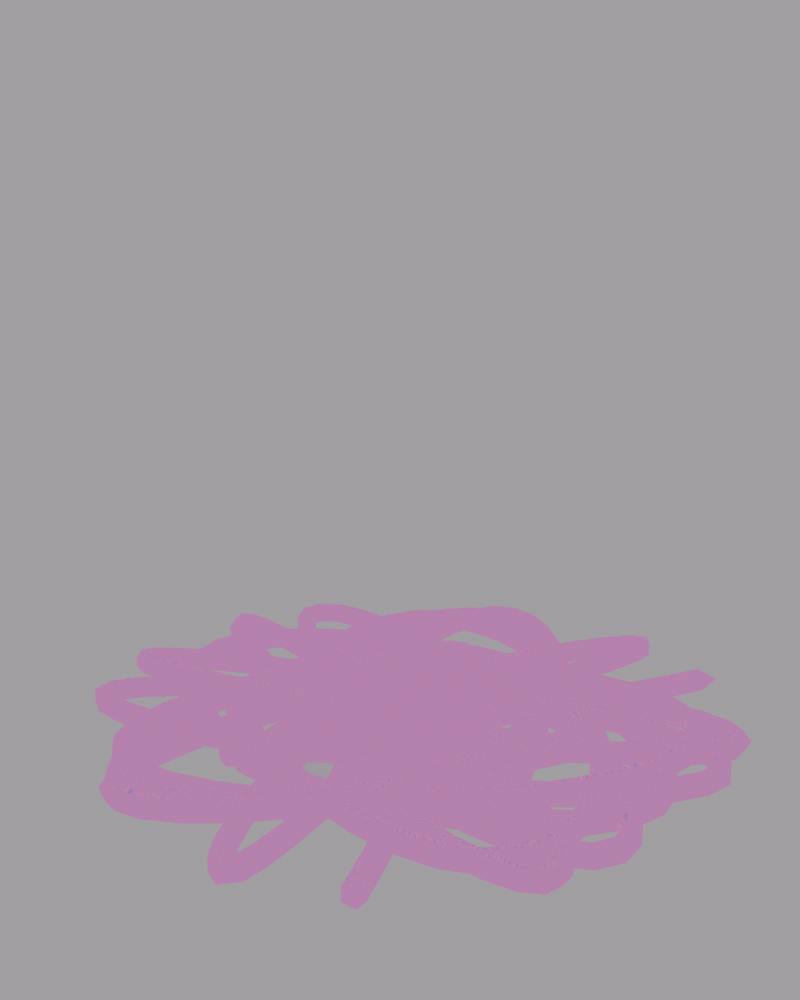
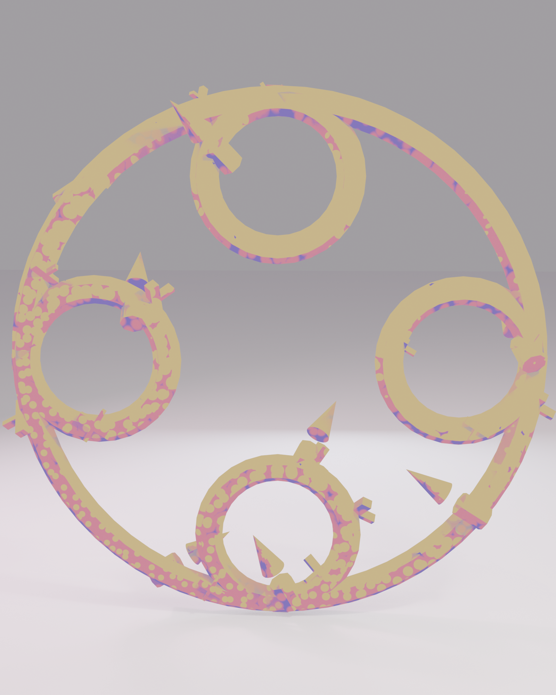
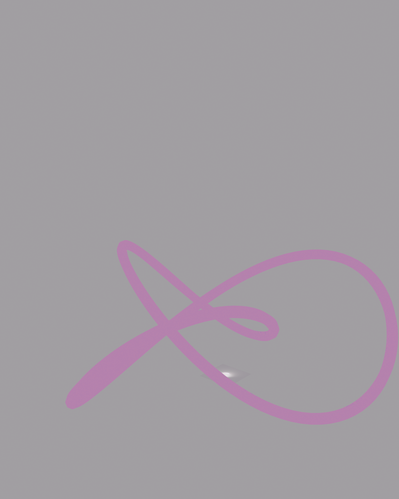

PCG_SakuraGrove
Sakura tree scattering with density falloff around the shrine path.
World 02 · L_SakuraDream · Sakura Dream
桜の夢 · Romantic fantasy environment
Sakura Dream is the mood pillar — a shrine approach you can read in one scroll, with warm lacquer, soft bloom, and material families that prove the world is designed, not decorated. Built for the magical girl / romantic fantasy signal.
Asset Passport
UE5 environment with full Substrate Toon material stack, PCG procedural scattering, and toon outline post-process.
Technical Breakdown
Hero renders with wireframe overlays (topology proof) and material isolate views (shader proof).


Detail Shots
Architectural and prop detail renders from the sakura environment — ornaments, lanterns, petals, and signature elements.





PCG Systems
PCG graphs drive blossom scatter, moss groundcover, petal drift, lantern placement, and shrine route scattering.
Sakura tree scattering with density falloff around the shrine path.
Petal drift along the player route — animated material instances.
Moss and groundcover with biome blending and slope exclusion.